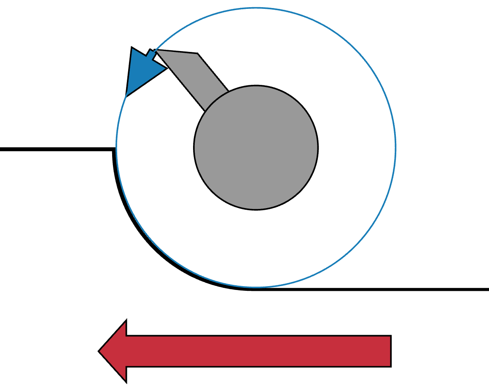

Continuous Flutes using a Rosette
|
|
ELFOS
Continuous Flutes using a Rosette |
|
The idea behind this approach is you are cutting the rosette's design around the object, whilst also moving very slowly along the Z axis. A standard cutter is typically used to to cut the rosette's profile.
| Rosette | Use a rosette with the desired shape (e.g., a Holtzapffel D-12 rosette, used from the far side). Another rosette which yields a nice effect is the PF-9. |

|
| Spindle |
The spindle is rotated slowly whilst the cutter is moved in the Z direction. |
|
| Cutting Frame |
The cutting frame selected and the angle of cutting can have great effects on the results achieved. Typically, a horizontal cutting frame is used.
The cutting frame is moved slowly down the Z axis. Movement of the cutter along the Z axis can be achieved at least two ways.
Note: a Drill Spindle could be used with this, but the cuts would probably not be as nicely made. |
|
| Cutter | Use a cutter with a standard shape (e.g., 60°). Hold it in a cutting frame, and move it down the whole length. | |
| Rubber | The shape of the rubber can have a great effect on the shape. |
| Screen | Actions | ||||||||||||||||||||||
|---|---|---|---|---|---|---|---|---|---|---|---|---|---|---|---|---|---|---|---|---|---|---|---|
|
On the Main page,
|
| Cutting Downhill | ||||||||||||||||||||||||||||||||||||||||||||||||||||||||||||||||||||||||||||||||||||||||||||||||||||||||||||||||||||||||||||||||||||||||||||||||||||||||||||||||||||||||||||||||||||||||||||||||||||||||||||||||||||||||||||||||||||||||||||||||||||||||||||||||||||||||||||||||||||||||||||||||||||||||||||||||||||||||||||||||||||||||||||||||||||||||||||||||||||||||||||||||||||||||||||||||||||||||||||||||||||||||||||||||||||||||||||||||||||||||||||||||||||||||||||||||||||||||||||||||||||||||||||||||||||||||||||||||||||||||||||||||||||||||||||||||||||||||||||||||||||||||||||||||||||||||||||||||||||||||||||||||||||||||||||||||||||||||||||||||||||||||||||||||||||||||||||||||||||||||||||||||||||||||||||||||||||||||||||||||||||||||||||||||||||||||||||||||||||||||||||||||||||||||||||||||||||||||||||||||||||||||||||||||||||||||||||||||||||||||||||||||||||||||||||||||||||||||||||||||||||||||||||||||||||||||||||||||||||||||||||||||||||||||||||||||||||||||||||||||||||||||||||||||||||||||||||||||||||||
|
 Cutting to the Left |

Cutting to the Right |
|||||||||||||||||||||||||||||||||||||||||||||||||||||||||||||||||||||||||||||||||||||||||||||||||||||||||||||||||||||||||||||||||||||||||||||||||||||||||||||||||||||||||||||||||||||||||||||||||||||||||||||||||||||||||||||||||||||||||||||||||||||||||||||||||||||||||||||||||||||||||||||||||||||||||||||||||||||||||||||||||||||||||||||||||||||||||||||||||||||||||||||||||||||||||||||||||||||||||||||||||||||||||||||||||||||||||||||||||||||||||||||||||||||||||||||||||||||||||||||||||||||||||||||||||||||||||||||||||||||||||||||||||||||||||||||||||||||||||||||||||||||||||||||||||||||||||||||||||||||||||||||||||||||||||||||||||||||||||||||||||||||||||||||||||||||||||||||||||||||||||||||||||||||||||||||||||||||||||||||||||||||||||||||||||||||||||||||||||||||||||||||||||||||||||||||||||||||||||||||||||||||||||||||||||||||||||||||||||||||||||||||||||||||||||||||||||||||||||||||||||||||||||||||||||||||||||||||||||||||||||||||||||||||||||||||||||||||||||||||||||||||||||||||||||||||||||||||||||||||
When cutting with a spinning cutter, just as on a router, it is a good practice to always cut downhill. This is not always possible, but it typically leaves the smoothest surface.
The choices for the direction to move the cutter (the red arrow) and the cutter's rotation (blue arrow) should be made to ensure downhill cutting happens.
This is an advantage for using a fly cutter over a carbide bit. With a fly cutter, the direction of the cut can be reversed. (For more information about fly cutters vs. carbide bits, see also Cutters on the Cutting Frames page at the Ornamental Turning Book of Knowledge.)
Click on any of the pictures on this page to see bigger images.


{kind=link}